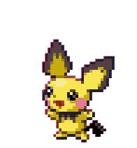
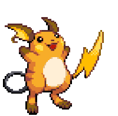

-
Bulbasaur #001

- Grama
- Veneno
Bulbasaur é uma criatura reptiliana que de algum jeito lembra um sapo ou um dinossauro jovem com umas manchas verde-azuladas escondidas. Tem três dedos brancos ou garras crescendo fora de suas quatro pernas. Seus olhos são de um vermelho brilhante, mas a característica mais notável deste Pokémon é o bulbo de cebola como sobre as suas costas.
-
Ivysaur #002

- Grama
- Veneno
Ivysaur, assim como sua pré-evolução, Bulbasaur, lembra um sapo ou um dinossauro quadrúpede, embora as manchas em sua pele faz ele se assemelhar mais a um dinossauro. Depois de evoluir de Bulbasaur, Ivysaur cresce pequenas presas e tem entranhas de ouvido visíveis. A pele do Ivysaur também é um pouco mais azul do que de Bulbasaur.
-
Venusaur #003

- Grama
- Veneno
Venusaur é um pokémon grande, dinossauro que é um pouco semelhante em aparência a suas formas pré-evoluídas, Ivysaur e Bulbasaur. Sua pele ainda mantém uma cor turquesa claro, mas já não tem manchas, e parece mais áspera e escamosa, com colisões aqui e ali.
-
Charmander #004

- Fogo
Charmander é um pequeno dinossauro bípede como pokémon. A maioria da cor do seu corpo é laranja, enquanto o seu ventre baixo é de cor amarelo-claro. Charmander, como suas evoluções, tem uma chama na ponta de sua cauda que arde constantemente.
-
Charmeleon #005

- Fogo
Charmeleon é um pequeno bípede, dinossauro-como Pokémon com uma aparência semelhante à de sua forma pré-evoluída, Charmander. Charmeleon Charmander difere na medida em que tem uma cor muito mais escura da pele, uma estrutura maior, garras e uma saliência de chifre-como na parte posterior da cabeça, semelhante à de um ornithopod.
-
Charizard #006

- Fogo
Ao contrário de suas pré-evoluções, tem asas que lhe permite voar, é um pokemon muito parecido com um dragão. Como suas formas anteriores, é bípede e tem uma longa cauda com uma chama que só se apaga quando ele morre. Tem três garras extremamente afiadas, dígitos distintos, um longo pescoço, e dois chifres salientes na parte de trás de sua cabeça.
-
Squirtle #007

- Àgua
Squirtle é um pequeno Pokémon, azul-claro com uma aparência semelhante ao de uma tartaruga. Como tartarugas, Squirtle tem um escudo que cobre seu corpo com orifícios
que permitem que seus membros, cauda e cabeça para ser exposto. Ao contrário de uma tartaruga, Squirtle é normalmente bípede. -
Wartortle #008

- Àgua
Wartortle são pequenos, bípede, tartaruga como Pokémon com uma aparência semelhante à da sua forma pré-evoluída, Squirtle. Algumas diferenças são que Wartortles desenvolveram garras e os dentes mais nítidas e maiores.
-
Blastoise #009

- Àgua
Blastoise é uma grande tartaruga-como Pokémon com algumas características semelhantes de suas formas pré-evoluídas. Blastoise tem um grande corpo azul, barriga de cor creme e um grande escudo marrom aros de branco, com seus canhões de água. É agora mais visivelmente mais volumoso do que suas evoluções anteriores.
-
Pichu #010
- Elétrico
Pichu tem a pele amarela. Suas orelhas tem a forma de retângulos, que tem de contorno uma cor preta. Tem olhos pretos, nariz preto e boca, tem bochechas rosas. Sua cauda é pequna que se parece com um "7" preto.
-
Pikachu #011

- Elétrico
Pikachu é um pequeno e gordinho, roedor Pokémon que é coberto quase completamente pela pele amarela. Tem orelhas amarelas longas que são derrubados com preto. A volta de Pikachu tem duas listras marrons, e sua grande cauda é notável por ser a forma de um raio.
-
Raichu #012
- Elétrico
Raichu absorve cargas elétricas de seu ambiente, e precisa para apoiar a sua própria cauda no chão para ser baixado, ou elevador para coletar eletricidade da atmosfera. Armazena a carga acumulada em seu rosto, exatamente como sua forma pré-evoluída Pikachu. Raichu tem as mesmas habilidas de um Pikachu, só que muito mais potentes.